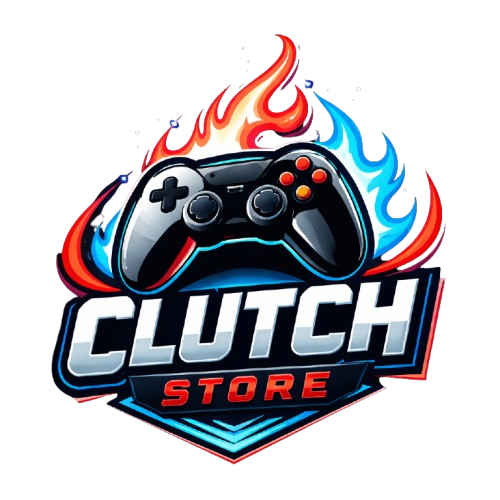

A Clutch Store chega ao mercado para democratizar o hardware de elite, provando que a alta performance profissional pode, sim, estar aliada a preços acessíveis. Mais do que uma loja, a marca carrega em seu DNA a colaboração e a paixão: a ideia nasceu da união de quatro amigos em uma faculdade no Rio de Janeiro, que compartilham o desejo de transformar o cenário gamer brasileiro.
Hoje, esse sonho se materializa através de especialistas em gaming e uma logística ágil. Oferecemos periféricos de última geração para quem busca a vantagem competitiva dos grandes palcos ou o máximo conforto no jogo casual.
Nosso Objetivo? Ser a principal referência mundial no setor e garantir que a essência da inovação brasileira esteja presente em cada setup vitorioso.